Exploration des données brutes
Source:vignettes/exploration-donnees-brutes.Rmd
exploration-donnees-brutes.Rmd
# devtools::load_all()
library(ACC)
library(tidyverse)
#> -- Attaching packages --------------------------------------- tidyverse 1.3.0 --
#> v ggplot2 3.3.2 v purrr 0.3.4
#> v tibble 3.0.4 v dplyr 1.0.2
#> v tidyr 1.1.2 v stringr 1.4.0
#> v readr 1.4.0 v forcats 0.5.0
#> -- Conflicts ------------------------------------------ tidyverse_conflicts() --
#> x dplyr::filter() masks stats::filter()
#> x dplyr::lag() masks stats::lag()
library(BARIS)Ce package a pour objectif d’accéder et d’analyser les données publiques d’accidents de la circulation.
Téléchargement des données
Ces données sont disponibles sur la plateforme open data data.gouv.fr.
Le package BARIS permet de faire le lien vers l’API data.gouv.fr. On peut ainsi obtenir la présentation du dataset à l’aide de BARIS_explain.
id_donnees <- "53698f4ca3a729239d2036df"
BARIS_explain(id_donnees) [1] “Pour chaque accident corporel (soit un accident survenu sur une voie ouverte à la circulation publique, impliquant au moins un véhicule et ayant fait au moins une victime ayant nécessité des soins), des saisies d’information décrivant l’accident sont effectuées par l’unité des forces de l’ordre (police, gendarmerie, etc.) qui est intervenue sur le lieu de l’accident. Ces saisies sont rassemblées dans une fiche intitulée bulletin d’analyse des accidents corporels. L’ensemble de ces fiches constitue le fichier national des accidents corporels de la circulation dit « Fichier BAAC » administré par l’Observatoire national interministériel de la sécurité routière "ONISR". Les bases de données, extraites du fichier BAAC, répertorient l’intégralité des accidents corporels de la circulation, intervenus durant une année précise en France métropolitaine, dans les départements d’Outre-mer (Guadeloupe, Guyane, Martinique, La Réunion et Mayotte depuis 2012) et dans les autres territoires d’outre-mer (Saint-Pierre-et-Miquelon, Saint-Barthélemy, Saint-Martin, Wallis-et-Futuna, Polynésie française et Nouvelle-Calédonie ; disponible qu’à partir de 2019 dans l’open data) avec une description simplifiée. Cela comprend des informations de localisation de l’accident, telles que renseignées ainsi que des informations concernant les caractéristiques de l’accident et son lieu, les véhicules impliqués et leurs victimes. Par rapport aux bases de données agrégées 2005-2010 et 2006-2011 actuellement disponibles sur le site www.data.gouv.fr, les bases de données de 2005 à 2019 sont désormais annuelles et composées de 4 fichiers (Caractéristiques – Lieux – Véhicules – Usagers) au format csv. Ces bases occultent néanmoins certaines données spécifiques relatives aux usagers et aux véhicules et à leur comportement dans la mesure où la divulgation de ces données porterait atteinte à la protection de la vie privée des personnes physiques aisément identifiables ou ferait apparaître le comportement de telles personnes alors que la divulgation de ce comportement pourrait leur porter préjudice (avis de la CADA – 2 janvier 2012). Avertissement : Les données sur la qualification de blessé hospitalisé depuis l’année 2018 ne peuvent être comparées aux années précédentes suite à des modifications de process de saisie des forces de l’ordre. L’indicateur « blessé hospitalisé » n’est plus labellisé par l’autorité de la statistique publique depuis 2019. La validité des exploitations statistiques qui peuvent être faites à partir de cette base dépend des modes de vérifications propres dans le domaine d’application de la sécurité routière et notamment d’une connaissance précise des définitions afférentes à chaque variable utilisée. Pour toute exploitation, il est important de prendre notamment connaissance de la structure de la fiche BAAC jointe ainsi que du guide d’utilisation de la codification du bulletin d’analyse des accidents corporels de la circulation. Rappelons qu’un certain nombre d’indicateurs issus de cette base font l’objet d’une labellisation, par l’autorité de la statistique publique (arrêté du 27 novembre 2019). La liste est disponible à l’adresse : https://www.onisr.securite-routiere.gouv.fr/outils-statistiques/indicateurs-labellises”
Ce jeu de données est divisé en 4 parties CARACTÉRISTIQUES, LIEUX, USAGERS, VÉHICULES. Il existe un lot de ces 4 fichiers par année entre 2005 et 2019
Un fichier descriptif accompagne ces données, et on reprend ici brièvement les définitions données dans ce document.
- La rubrique CARACTERISTIQUES qui décrit les circonstances générales de l’accident
- La rubrique LIEUX qui décrit le lieu principal de l’accident même si celui-ci s’est déroulé à une intersection
- La rubrique VEHICULES impliqués
- La rubrique USAGERS impliqués
Export rapide des données 2019
ressources <- BARIS_resources(id_donnees) #Tibble avec les URL
data_2019 <- ressources %>%
filter(str_detect(title,"2019"),format=="csv") #On garde les fichiers csv de 2019
# if(!dir.exists("data-raw"))
# dir.create("data-raw")
# Commenté pour ne pas re-télécharger les données systématiquement
# for(i in 1:nrow(data_2019)){
# tmp_df <- data_2019[i,]
# download.file(url = tmp_df$url,
# destfile = paste0("data-raw/",tmp_df$title),overwrite = T)
# }Exploration des données de la table Caractéristiques
# caractéristiques générales de la table
caracteristiques <- dl_caracteristiques(2019L)
#> i Chargement de caracteristiques-2019.csv
# caracteristiques <- read.table(here::here("data-raw","caracteristiques-2019.csv"),sep=";",header = T)
# data("caracteristiques", package = "ACC")
summary(caracteristiques)
#> Num_Acc jour mois an
#> Length:58840 Min. : 1.00 Min. : 1.000 Min. :2019
#> Class :character 1st Qu.: 8.00 1st Qu.: 4.000 1st Qu.:2019
#> Mode :character Median :16.00 Median : 7.000 Median :2019
#> Mean :15.68 Mean : 6.688 Mean :2019
#> 3rd Qu.:23.00 3rd Qu.:10.000 3rd Qu.:2019
#> Max. :31.00 Max. :12.000 Max. :2019
#>
#> hrmn lum dep com
#> Length:58840 Min. :1.000 Length:58840 Length:58840
#> Class :character 1st Qu.:1.000 Class :character Class :character
#> Mode :character Median :1.000 Mode :character Mode :character
#> Mean :1.945
#> 3rd Qu.:3.000
#> Max. :5.000
#>
#> agg int atm col
#> Min. :1.000 Min. :1.000 Min. :1.000 Min. :1.000
#> 1st Qu.:1.000 1st Qu.:1.000 1st Qu.:1.000 1st Qu.:3.000
#> Median :2.000 Median :1.000 Median :1.000 Median :3.000
#> Mean :1.646 Mean :2.025 Mean :1.618 Mean :4.165
#> 3rd Qu.:2.000 3rd Qu.:2.000 3rd Qu.:1.000 3rd Qu.:6.000
#> Max. :2.000 Max. :9.000 Max. :9.000 Max. :7.000
#> NA's :1 NA's :2
#> adr lat long
#> Length:58840 Length:58840 Length:58840
#> Class :character Class :character Class :character
#> Mode :character Mode :character Mode :character
#>
#>
#>
#>
names(caracteristiques)
#> [1] "Num_Acc" "jour" "mois" "an" "hrmn" "lum" "dep"
#> [8] "com" "agg" "int" "atm" "col" "adr" "lat"
#> [15] "long"
nrow(caracteristiques) #58 840
#> [1] 58840
caracteristiques %>% head(10)
#> # A tibble: 10 x 15
#> Num_Acc jour mois an hrmn lum dep com agg int atm col
#> <chr> <int> <int> <int> <chr> <int> <chr> <chr> <int> <int> <int> <int>
#> 1 201900~ 30 11 2019 01:30 4 93 93053 1 1 1 2
#> 2 201900~ 30 11 2019 02:50 3 93 93066 1 1 1 6
#> 3 201900~ 28 11 2019 15:15 1 92 92036 1 1 1 4
#> 4 201900~ 30 11 2019 20:20 5 94 94069 1 1 1 4
#> 5 201900~ 30 11 2019 04:00 3 94 94028 1 1 1 2
#> 6 201900~ 28 11 2019 14:03 1 87 87085 1 3 2 3
#> 7 201900~ 28 11 2019 07:27 2 69 69092 2 1 8 2
#> 8 201900~ 29 11 2019 16:40 2 38 38544 2 1 1 6
#> 9 201900~ 28 11 2019 18:00 3 34 34129 1 1 1 5
#> 10 201900~ 28 11 2019 14:50 1 13 13206 2 1 1 2
#> # ... with 3 more variables: adr <chr>, lat <chr>, long <chr>
# variable lum = Conditions d eclairage
caracteristiques %>%
group_by(lum) %>%
summarise(n = n(),
prop = n / nrow(caracteristiques))
#> `summarise()` ungrouping output (override with `.groups` argument)
#> # A tibble: 5 x 3
#> lum n prop
#> <int> <int> <dbl>
#> 1 1 39002 0.663
#> 2 2 3781 0.0643
#> 3 3 5948 0.101
#> 4 4 517 0.00879
#> 5 5 9592 0.163
hist(caracteristiques$lum, main = "Répartition de la variable Conditions d eclairage", col = "firebrick")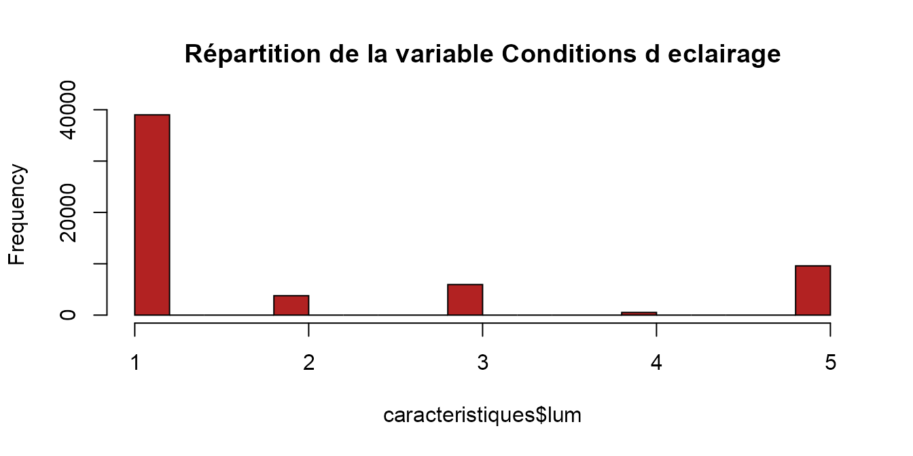
# on pourrait regrouper les modalités 3 et 4 en "sans éclairage"
# variable agg = Localisation
caracteristiques %>%
group_by(agg) %>%
summarise(n = n(),
prop = n / nrow(caracteristiques))
#> `summarise()` ungrouping output (override with `.groups` argument)
#> # A tibble: 2 x 3
#> agg n prop
#> <int> <int> <dbl>
#> 1 1 20836 0.354
#> 2 2 38004 0.646
hist(caracteristiques$agg, main = "Répartition de la variable Localisation", col = "firebrick")
# variable int = Intersection
caracteristiques %>%
group_by(int) %>%
summarise(n = n(),
prop = n / nrow(caracteristiques))
#> `summarise()` ungrouping output (override with `.groups` argument)
#> # A tibble: 9 x 3
#> int n prop
#> <int> <int> <dbl>
#> 1 1 38796 0.659
#> 2 2 6884 0.117
#> 3 3 6046 0.103
#> 4 4 1286 0.0219
#> 5 5 299 0.00508
#> 6 6 2161 0.0367
#> 7 7 696 0.0118
#> 8 8 55 0.000935
#> 9 9 2617 0.0445
hist(caracteristiques$int, main = "Répartition de la variable Intersection", col = "firebrick")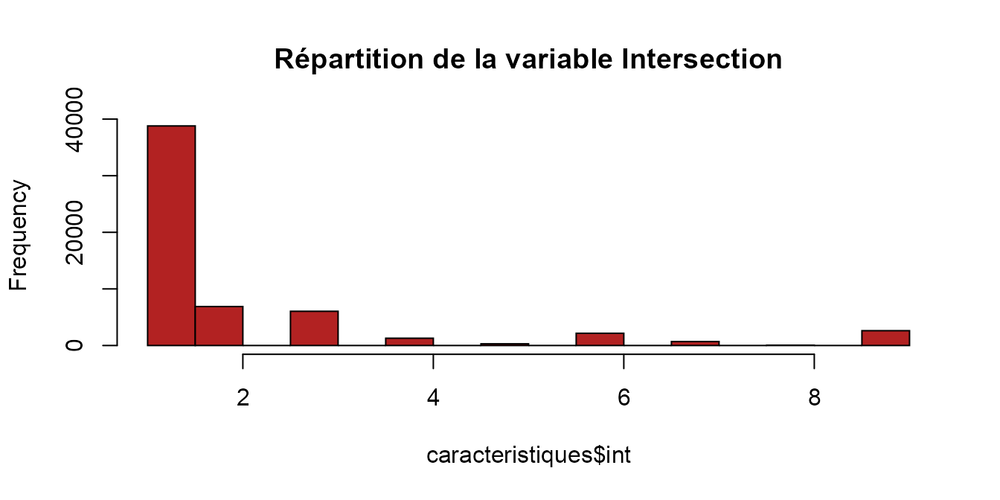
# on pourrait créer une modalité "intersection" à partir des modalités (2, 3, 4, 5, 9)
# variable atm = Conditions atmosphériques
caracteristiques %>%
group_by(atm) %>%
summarise(n = n(),
prop = n / nrow(caracteristiques))
#> `summarise()` ungrouping output (override with `.groups` argument)
#> # A tibble: 10 x 3
#> atm n prop
#> <int> <int> <dbl>
#> 1 1 46528 0.791
#> 2 2 6597 0.112
#> 3 3 1457 0.0248
#> 4 4 219 0.00372
#> 5 5 329 0.00559
#> 6 6 177 0.00301
#> 7 7 1035 0.0176
#> 8 8 2202 0.0374
#> 9 9 295 0.00501
#> 10 NA 1 0.0000170
hist(caracteristiques$atm, main = "Répartition de la variable Conditions atmosphériques", col = "firebrick")
# on pourrait créer une modalité "intersection" à partir des modalités 2 et 3 et créer une modalité autre à partir des modalités (-1, 4, 5, 6, 7, 8, 9)
# variable col = Type de collision
caracteristiques %>%
group_by(col) %>%
summarise(n = n(),
prop = n / nrow(caracteristiques))
#> `summarise()` ungrouping output (override with `.groups` argument)
#> # A tibble: 8 x 3
#> col n prop
#> <int> <int> <dbl>
#> 1 1 5329 0.0906
#> 2 2 7390 0.126
#> 3 3 17124 0.291
#> 4 4 2270 0.0386
#> 5 5 1927 0.0327
#> 6 6 18708 0.318
#> 7 7 6090 0.104
#> 8 NA 2 0.0000340
hist(caracteristiques$col, main = "Répartition de la variable Type de collision", col = "firebrick")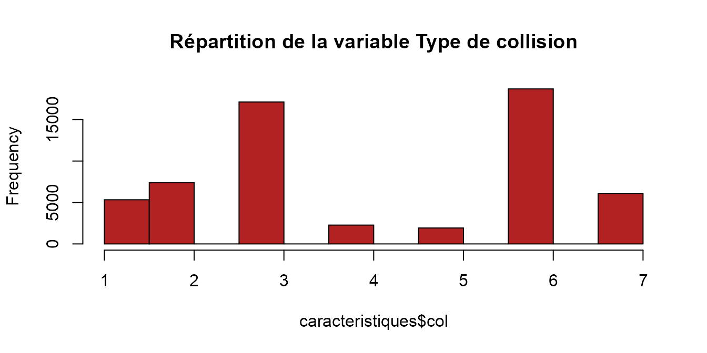
# on pourrait créer une modalité "3 et +" à partir des modalités 4 et 5Insertion des libellés dans la table CARACTERISTIQUES
# carac <- read.csv(here::here("data-raw","caracteristiques-2019.csv"),sep=";",header=T)
# carac <- caracteristiques
# Ajout des libellés relatifs à la luminosité avec regroupement des modalités 3 et 4
caracteristiques <- caracteristiques %>%
select(-gps) %>%
mutate(lum=case_when(
lum==1 ~ "Plein jour",
lum==2 ~ "Crépuscule ou aube",
lum %in% c(3,4) ~ "Nuit sans éclairage",
TRUE ~ "Nuit avec éclairage public")
) %>%
# Ajout des libellés relatifs à l'agglomération
mutate(agg=ifelse(agg==1,"Hors agglomération","En agglomération")) %>%
# Ajout des libellés relatifs aux types d'intersection avec regroupement des variables 2, 3, 4, 5 et 9 en "Intersection"
mutate(intersection=case_when(
int==1 ~ "Hors intersection",
int %in% c(2:5,9) ~ "Intersection",
int==6 ~ "Giratoire",
int==7 ~ "Place",
TRUE ~ "Passage à niveau")
) %>% select(-`int`) %>%
# Ajout des libellés relatifs aux conditions atmosphériques
mutate(atm=case_when(
atm==1 ~ "Normale",
atm==2 ~ "Pluie légère",
atm==3 ~ "Pluie forte",
atm==4 ~ "Neige - grêle",
atm==5 ~ "Brouillard - fumée",
atm==6 ~ "Vent fort - tempête",
atm==7 ~ "Temps éblouissant",
atm==8 ~ "Temps couvert",
TRUE ~ "Autre")
) %>%
# Ajout des libellés relatifs au nombre de véhicules impliqués dans la collision avec regroupement des modalités 4 et 5
mutate(col=case_when(
col=='-1' ~ "Non Renseigné",
col==1 ~ "2 véhicules - frontale",
col==2 ~ "2 véhicules - par l'arrière",
col==3 ~ "2 véhicules - par le côté",
col %in% c(4,5) ~ "3 véhicules et plus",
col==6 ~ "Autre collision",
TRUE~ "Sans collision")
) %>%
# Date de l'accident
mutate(
annee = ifelse(an<2000L, an+2000, an),
date_acc = lubridate::ymd(paste(annee, mois, jour, sep = '-'))
) %>% select(-an, -annee, -jour, -mois)
coord_gps_code_commune <- BARIS::BARIS_resources("545b55e1c751df52de9b6045") %>%
dplyr::filter(stringr::str_detect(title,"Base off")) %>%
dplyr::pull(id) %>%
BARIS::BARIS_extract(format = "csv") %>%
dplyr::filter(coordonnees_gps!="") %>%
dplyr::distinct(code_commune_insee, coordonnees_gps) %>%
tidyr::separate(coordonnees_gps, sep = ",", into = c('lat','long'))
caracteristiques_avec_gps <- filter(caracteristiques, !is.na(lat))
caracteristiques_sans_gps <- filter(caracteristiques, is.na(lat)) %>% select(-lat,-long) %>%
left_join(coord_gps_code_commune, by = c("com"="code_commune_insee"))
caracteristiques <- bind_rows(caracteristiques_avec_gps, caracteristiques_sans_gps)
caracteristiquesExploration des données de la table Lieux
#lieux <- read.table(here::here("data-raw","lieux-2019.csv"),sep=";",header = T)
lieux <- dl_lieux(2019L)
#> i Chargement de lieux-2019.csv
# data(lieux)
summary(lieux)
#> Num_Acc catr voie v1
#> Length:58840 Min. :1.000 Length:58840 Length:58840
#> Class :character 1st Qu.:3.000 Class :character Class :character
#> Mode :character Median :3.000 Mode :character Mode :character
#> Mean :3.348
#> 3rd Qu.:4.000
#> Max. :9.000
#>
#> v2 circ nbv vosp
#> Length:58840 Min. :1.000 Min. : 0.000 Min. :0.0000
#> Class :character 1st Qu.:2.000 1st Qu.: 2.000 1st Qu.:0.0000
#> Mode :character Median :2.000 Median : 2.000 Median :0.0000
#> Mean :1.981 Mean : 2.443 Mean :0.1491
#> 3rd Qu.:2.000 3rd Qu.: 3.000 3rd Qu.:0.0000
#> Max. :4.000 Max. :12.000 Max. :3.0000
#> NA's :3154 NA's :650 NA's :669
#> prof pr pr1 plan
#> Min. :1.000 Length:58840 Length:58840 Min. :1.000
#> 1st Qu.:1.000 Class :character Class :character 1st Qu.:1.000
#> Median :1.000 Mode :character Mode :character Median :1.000
#> Mean :1.244 Mean :1.306
#> 3rd Qu.:1.000 3rd Qu.:1.000
#> Max. :4.000 Max. :4.000
#> NA's :14 NA's :11
#> lartpc larrout surf infra
#> Min. : 0.00 Min. : 2.40 Min. :1.000 Min. :0.0000
#> 1st Qu.: 0.00 1st Qu.: 6.00 1st Qu.:1.000 1st Qu.:0.0000
#> Median : 0.00 Median : 14.00 Median :1.000 Median :0.0000
#> Mean : 4.68 Mean : 42.05 Mean :1.279 Mean :0.8821
#> 3rd Qu.: 2.00 3rd Qu.: 65.00 3rd Qu.:1.000 3rd Qu.:0.0000
#> Max. :180.00 Max. :730.00 Max. :9.000 Max. :9.0000
#> NA's :58629 NA's :58468 NA's :21 NA's :45
#> situ vma
#> Min. :1.000 Min. : 0.00
#> 1st Qu.:1.000 1st Qu.: 50.00
#> Median :1.000 Median : 50.00
#> Mean :1.408 Mean : 60.85
#> 3rd Qu.:1.000 3rd Qu.: 80.00
#> Max. :8.000 Max. :800.00
#> NA's :116 NA's :881
names(lieux)
#> [1] "Num_Acc" "catr" "voie" "v1" "v2" "circ" "nbv"
#> [8] "vosp" "prof" "pr" "pr1" "plan" "lartpc" "larrout"
#> [15] "surf" "infra" "situ" "vma"
nrow(lieux) #58 840
#> [1] 58840
lieux %>% head(10)
#> # A tibble: 10 x 18
#> Num_Acc catr voie v1 v2 circ nbv vosp prof pr pr1 plan
#> <chr> <int> <chr> <chr> <chr> <int> <int> <int> <int> <chr> <chr> <dbl>
#> 1 201900~ 1 "3" 0 <NA> 3 10 0 1 6 900 2
#> 2 201900~ 1 "1" 0 <NA> 1 2 0 4 3 845 2
#> 3 201900~ 1 "86" 0 <NA> 3 8 0 1 10 500 3
#> 4 201900~ 1 "4" 0 <NA> 3 5 0 1 2 299 1
#> 5 201900~ 1 "86 " 0 INT 1 3 0 1 41 0 3
#> 6 201900~ 4 "FOC~ 0 <NA> 2 2 0 1 0 0 1
#> 7 201900~ 4 "BEA~ 0 <NA> 2 2 0 1 1 0 1
#> 8 201900~ 4 "VIC~ 0 <NA> 2 2 0 2 0 0 1
#> 9 201900~ 3 "986~ 0 <NA> 1 4 0 1 (1) (1) 1
#> 10 201900~ 7 "LOU~ 0 <NA> 2 4 0 2 0 0 1
#> # ... with 6 more variables: lartpc <dbl>, larrout <dbl>, surf <dbl>,
#> # infra <int>, situ <int>, vma <dbl>
# variable catr = Catégorie de la route
lieux %>%
group_by(catr) %>%
summarise(n = n(),
prop = n / nrow(lieux))
#> `summarise()` ungrouping output (override with `.groups` argument)
#> # A tibble: 8 x 3
#> catr n prop
#> <int> <int> <dbl>
#> 1 1 5823 0.0990
#> 2 2 3866 0.0657
#> 3 3 20963 0.356
#> 4 4 25771 0.438
#> 5 5 87 0.00148
#> 6 6 442 0.00751
#> 7 7 1298 0.0221
#> 8 9 590 0.0100
hist(lieux$catr, main = "Répartition de la variable Catégorie de la route", col = "lightblue")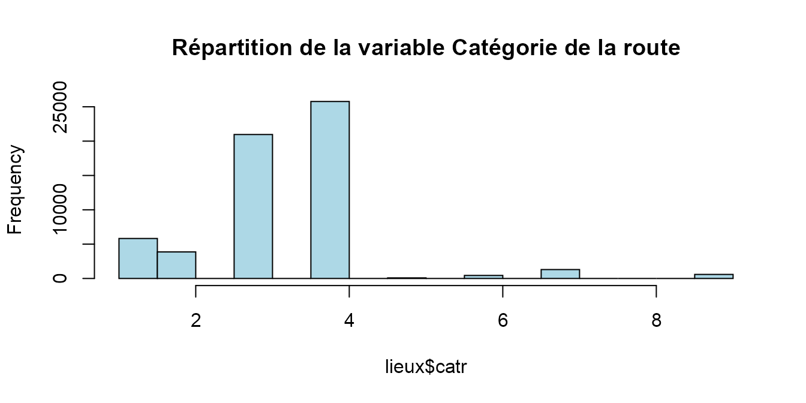
# on pourrait garder les modalités 1, 2, 3 et 4 et regrouper les modalités 5 à 9 en 'autres'
# variable circ = Régime de circulation
lieux %>%
group_by(circ) %>%
summarise(n = n(),
prop = n / nrow(lieux))
#> `summarise()` ungrouping output (override with `.groups` argument)
#> # A tibble: 5 x 3
#> circ n prop
#> <int> <int> <dbl>
#> 1 1 10381 0.176
#> 2 2 36367 0.618
#> 3 3 8577 0.146
#> 4 4 361 0.00614
#> 5 NA 3154 0.0536
hist(lieux$circ, main = "Répartition de la variable Régime de circulation", col = "lightblue")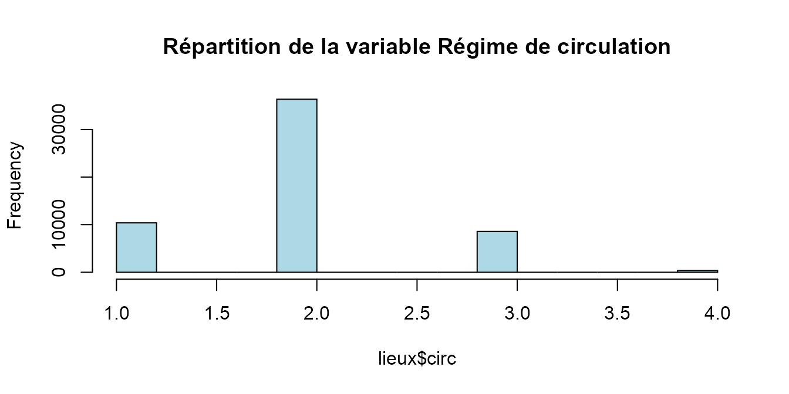
# on pourrait garder les modalités 1, 2 et 3 et regrouper les modalités -1 et 4 en 'autres/non renseigné'
# variable nbv = Nombre total de voies de circulation
lieux %>%
group_by(nbv) %>%
summarise(n = n(),
prop = n / nrow(lieux))
#> `summarise()` ungrouping output (override with `.groups` argument)
#> # A tibble: 14 x 3
#> nbv n prop
#> <int> <int> <dbl>
#> 1 0 1646 0.0280
#> 2 1 5799 0.0986
#> 3 2 35600 0.605
#> 4 3 4402 0.0748
#> 5 4 7075 0.120
#> 6 5 984 0.0167
#> 7 6 1592 0.0271
#> 8 7 220 0.00374
#> 9 8 535 0.00909
#> 10 9 107 0.00182
#> 11 10 165 0.00280
#> 12 11 38 0.000646
#> 13 12 27 0.000459
#> 14 NA 650 0.0110
hist(lieux$nbv, main = "Répartition de la variable Nombre total de voies de circulation", col = "lightblue")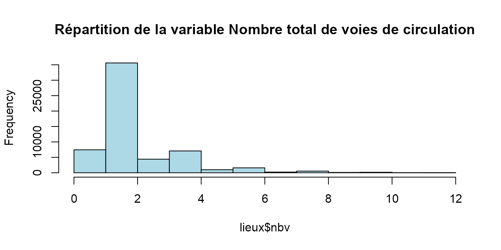
# on pourrait garder les modalités 1, 2 et créer la modalité "3 et +" et créer la modalité "non renseigné" pour les valeurs (-1,0)
# variable prof = Profil de la route
lieux %>%
group_by(prof) %>%
summarise(n = n(),
prop = n / nrow(lieux))
#> `summarise()` ungrouping output (override with `.groups` argument)
#> # A tibble: 5 x 3
#> prof n prop
#> <int> <int> <dbl>
#> 1 1 47299 0.804
#> 2 2 9611 0.163
#> 3 3 1000 0.0170
#> 4 4 916 0.0156
#> 5 NA 14 0.000238
hist(lieux$prof, main = "Répartition de la variable Profil de la route", col = "lightblue")
# on pourrait garder les modalités 1, 2 et regrouper les modalités -1, 3 et 4 en 'autres/non renseigné'
# variable plan = Tracé de la route
lieux %>%
group_by(plan) %>%
summarise(n = n(),
prop = n / nrow(lieux))
#> `summarise()` ungrouping output (override with `.groups` argument)
#> # A tibble: 5 x 3
#> plan n prop
#> <dbl> <int> <dbl>
#> 1 1 47449 0.806
#> 2 2 5534 0.0941
#> 3 3 5095 0.0866
#> 4 4 751 0.0128
#> 5 NA 11 0.000187
hist(lieux$plan, main = "Répartition de la variable Tracé de la route", col = "lightblue")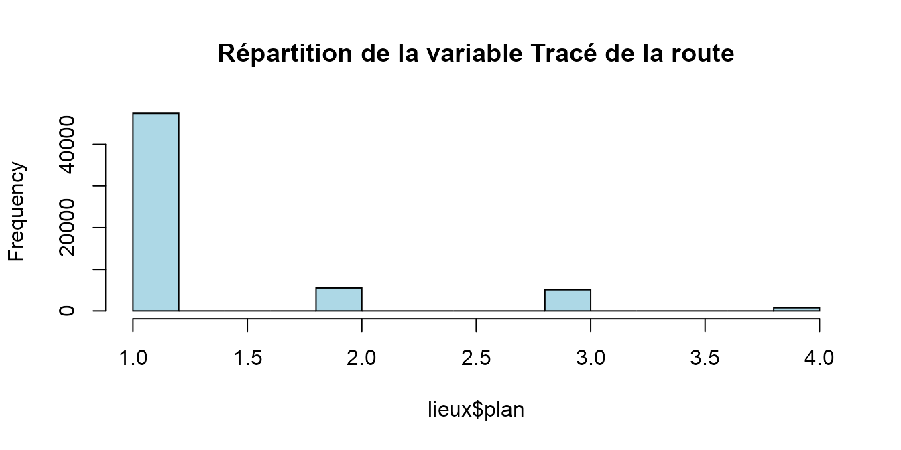
# il y a une modalité 4 non cité dans la doc... La modalité 4 est "en S" mais citée sur la même ligne que la modalité 3 dans la doc.
# on pourrait créer une variable binaire : rectiligne/non rectiligne
# variable larrout = Largeur de la chaussée
summary(lieux$larrout)
#> Min. 1st Qu. Median Mean 3rd Qu. Max. NA's
#> 2.40 6.00 14.00 42.05 65.00 730.00 58468
# 58 468 valeurs manquantes => donnée inexploitable
# variable surf = Etat de la surface
lieux %>%
group_by(surf) %>%
summarise(n = n(),
prop = n / nrow(lieux))
#> `summarise()` ungrouping output (override with `.groups` argument)
#> # A tibble: 10 x 3
#> surf n prop
#> <dbl> <int> <dbl>
#> 1 1 46951 0.798
#> 2 2 10958 0.186
#> 3 3 115 0.00195
#> 4 4 18 0.000306
#> 5 5 104 0.00177
#> 6 6 37 0.000629
#> 7 7 197 0.00335
#> 8 8 113 0.00192
#> 9 9 326 0.00554
#> 10 NA 21 0.000357
hist(lieux$surf, main = "Répartition de la variable Etat de la surface", col = "lightblue")
# surtout les modalités 1 et 2 => je ne sais pas si on regroupe 2, 3 et 4 pour "mouillée" et on fait une modalité autres pour le reste ou alors on ne fait que 2 modalités : normale/pas normale
# variable infra = Aménagement - Infrastructure
lieux %>%
group_by(infra) %>%
summarise(n = n(),
prop = n / nrow(lieux))
#> `summarise()` ungrouping output (override with `.groups` argument)
#> # A tibble: 11 x 3
#> infra n prop
#> <int> <int> <dbl>
#> 1 0 49041 0.833
#> 2 1 734 0.0125
#> 3 2 1152 0.0196
#> 4 3 872 0.0148
#> 5 4 243 0.00413
#> 6 5 3309 0.0562
#> 7 6 572 0.00972
#> 8 7 40 0.000680
#> 9 8 508 0.00863
#> 10 9 2324 0.0395
#> 11 NA 45 0.000765
hist(lieux$infra, main = "Répartition de la variable Aménagement - Infrastructure", col = "lightblue")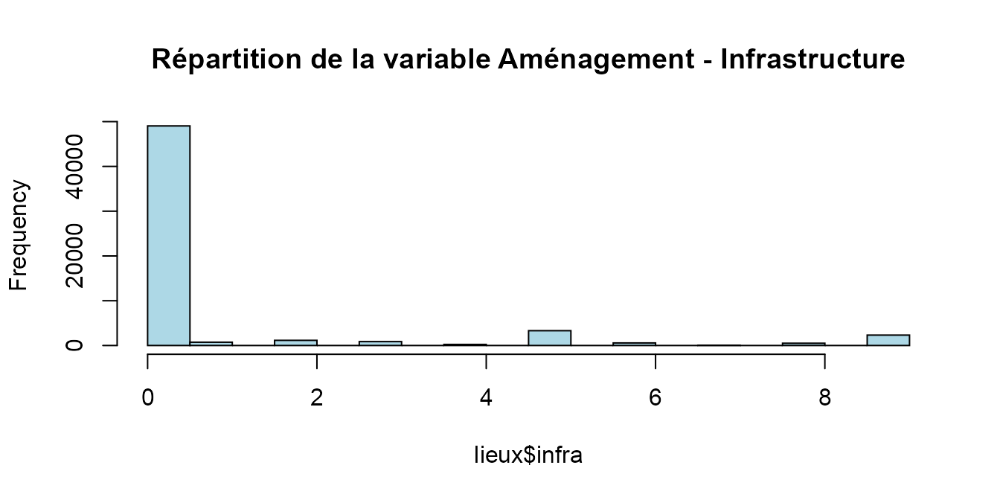
# je ne sais pas trop pour les regroupements possibles
# variable situ = Situation de l’accident
lieux %>%
group_by(situ) %>%
summarise(n = n(),
prop = n / nrow(lieux))
#> `summarise()` ungrouping output (override with `.groups` argument)
#> # A tibble: 8 x 3
#> situ n prop
#> <int> <int> <dbl>
#> 1 1 50674 0.861
#> 2 2 955 0.0162
#> 3 3 4286 0.0728
#> 4 4 690 0.0117
#> 5 5 522 0.00887
#> 6 6 443 0.00753
#> 7 8 1154 0.0196
#> 8 NA 116 0.00197
hist(lieux$situ, main = "Répartition de la variable Situation de l accident", col = "lightblue")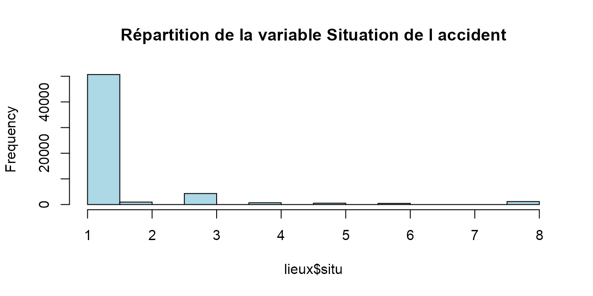
# a minima on pourrait regrouper les modalités -1, 6 et 8 en "autres"Insertion des libellés dans la table LIEUX
# Ajout des libellés relatifs à la catégorie de route avec regroupement les madalités 5 à 9 en "Autre"
# data("lieux",package = "ACC")
lieux <- lieux %>%
select(-larrout, -lartpc, -env1, -v1, -v2, -vosp, -pr, -pr1) %>% #On retire la variable larrout, lartpc, env1 (non ducmentée)
mutate(catr=case_when(
catr==1 ~ "Autoroute",
catr==2 ~ "Route Nationale",
catr==3 ~ "Route Départementale",
catr==4 ~ "Voie Communale",
TRUE ~ "Autre")
) %>%
# Ajout des libellés relatifs au régime de circulation avec regroupement des modalités -1 et 4 en "Autre/Non Renseigné"
mutate(circ=case_when(
circ==1 ~ "A sens unique",
circ==2 ~ "Bidirectionnelle",
circ==3 ~ "A chaussées séparées",
TRUE ~ "Autre/Non Renseigné")
) %>%
# Ajout des libellés relatifs au nombre de voies de circulation avec regroupement des modalités 3 et plus en une seule modalité et regroupement des modalités -1 et 0 en "Non Renseigné"
mutate(nbv=ifelse(
nbv %in% c(1,2),nbv,
ifelse(
nbv >=3, "3 et plus","Non Renseigné"
)
)
) %>%
# Ajout des libellés relatifs au profil de la route avec regroupement des modalités -1, 3 et 4 en "Autre/Non Renseigné"
mutate(prof=case_when(
prof==1 ~ "Plat",
prof==2 ~ "Pente",
TRUE ~ "Autre/Non Renseigné")
) %>%
# Ajout des libellés relatifs au tracé de la route dans une variable binaire "Rectiligne/Non rectiligne"
mutate(plan=case_when(
plan==1 ~ "Rectiligne",
plan %in% c(2,3,4) ~ "Non Rectiligne",
TRUE ~ "Non Renseigné")
) %>%
# Ajout des libellés relatifs à la surface en faisant 2 modalités : Normale et Anormale.
mutate(surf=case_when(
surf==1 ~ "Normale",
surf %in% c(2:9) ~ "Anormale",
TRUE ~ "Non Renseigné")
) %>%
# Ajout des libellés relatifs à la présence d'un aménagement ou d'une infrastructure, regroupement en 3 modalités "Oui/Non/Non Renseigné"
mutate(infra=case_when(
infra==0 ~ "Non",
infra %in% c(1:9) ~ "Oui",
TRUE ~ "Non Renseigné")
) %>%
# Ajout des libellés relatifs à la situation de l'accident en regroupant les modalités -1, 6 et 8 en "Autre/Non Renseigné"
mutate(situ=case_when(
situ==0 ~ "Aucun",
situ==1 ~ "Sur chaussée",
situ==2 ~ "Sur bande d'arrêt d'urgence",
situ==3 ~ "Sur accotement",
situ==4 ~ "Sur trottoir",
situ==5 ~ "Sur piste cyclable",
TRUE ~ "Autre/Non Renseigné")
)
lieuxExploration des données de la table Véhicules
# data("vehicules",package = "ACC")
# vehicules <- read.table(here::here("data-raw","vehicules-2019.csv"),sep=";",header = T)
vehicules <- dl_vehicules(2019L)
#> i Chargement de vehicules-2019.csv
# data(vehicules)
summary(vehicules)
#> Num_Acc id_vehicule num_veh senc
#> Length:100710 Length:100710 Length:100710 Min. :0.000
#> Class :character Class :character Class :character 1st Qu.:1.000
#> Mode :character Mode :character Mode :character Median :1.000
#> Mean :1.558
#> 3rd Qu.:2.000
#> Max. :3.000
#> NA's :42
#> catv obs obsm choc
#> Min. : 0.00 Min. : 0.0000 Min. :0.000 Min. :0.000
#> 1st Qu.: 7.00 1st Qu.: 0.0000 1st Qu.:1.000 1st Qu.:1.000
#> Median : 7.00 Median : 0.0000 Median :2.000 Median :2.000
#> Mean :12.63 Mean : 0.9915 Mean :1.629 Mean :2.928
#> 3rd Qu.:10.00 3rd Qu.: 0.0000 3rd Qu.:2.000 3rd Qu.:4.000
#> Max. :99.00 Max. :17.0000 Max. :9.000 Max. :9.000
#> NA's :41 NA's :74 NA's :45
#> manv motor occutc
#> Min. : 0.000 Min. :0.000 Min. : 0.00
#> 1st Qu.: 1.000 1st Qu.:1.000 1st Qu.: 1.00
#> Median : 2.000 Median :1.000 Median : 1.00
#> Mean : 7.271 Mean :1.178 Mean : 1.82
#> 3rd Qu.:15.000 3rd Qu.:1.000 3rd Qu.: 1.00
#> Max. :26.000 Max. :6.000 Max. :33.00
#> NA's :44 NA's :326 NA's :99818
names(vehicules)
#> [1] "Num_Acc" "id_vehicule" "num_veh" "senc" "catv"
#> [6] "obs" "obsm" "choc" "manv" "motor"
#> [11] "occutc"
nrow(vehicules) #100710
#> [1] 100710
vehicules %>% head(10)
#> # A tibble: 10 x 11
#> Num_Acc id_vehicule num_veh senc catv obs obsm choc manv motor occutc
#> <chr> <chr> <chr> <int> <int> <int> <int> <int> <int> <int> <int>
#> 1 2019000~ 138Â 306Â ~ B01 2 7 0 2 5 23 1 NA
#> 2 2019000~ 138Â 306Â ~ A01 2 17 1 0 3 11 1 NA
#> 3 2019000~ 138Â 306Â ~ A01 1 7 4 0 1 0 1 NA
#> 4 2019000~ 138Â 306Â ~ A01 1 7 0 2 1 2 1 NA
#> 5 2019000~ 138Â 306Â ~ B01 1 7 1 0 4 2 1 NA
#> 6 2019000~ 138Â 306Â ~ C01 1 7 0 2 4 23 6 NA
#> 7 2019000~ 138Â 306Â ~ A01 2 7 0 2 4 23 1 NA
#> 8 2019000~ 138Â 306Â ~ B01 2 7 0 2 4 23 1 NA
#> 9 2019000~ 138Â 306Â ~ C01 2 7 0 2 1 2 1 NA
#> 10 2019000~ 138Â 306Â ~ B01 1 7 0 2 4 23 1 NA
# variable senc = Sens de circulation
vehicules %>%
group_by(senc) %>%
summarise(n = n(),
prop = n / nrow(vehicules))
#> `summarise()` ungrouping output (override with `.groups` argument)
#> # A tibble: 5 x 3
#> senc n prop
#> <int> <int> <dbl>
#> 1 0 7428 0.0738
#> 2 1 44661 0.443
#> 3 2 33543 0.333
#> 4 3 15036 0.149
#> 5 NA 42 0.000417
hist(vehicules$senc, main = "Répartition de la variable Sens de circulation", col = "forestgreen")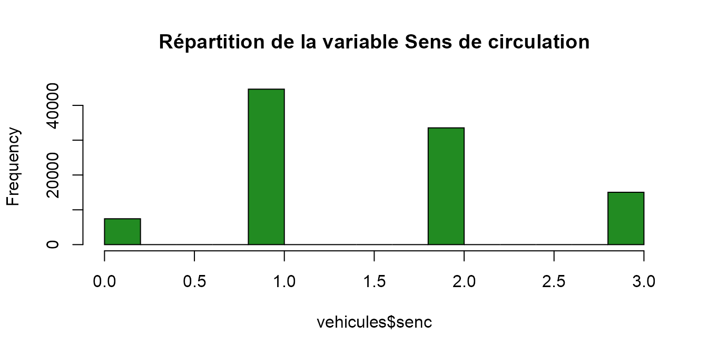
# pas convaincue par l'intérêt de cette variable
# variable catv = Catégorie du véhicule
vehicules %>%
group_by(catv) %>%
summarise(n = n(),
prop = n / nrow(vehicules)) %>%
arrange(desc(prop))
#> `summarise()` ungrouping output (override with `.groups` argument)
#> # A tibble: 31 x 3
#> catv n prop
#> <int> <int> <dbl>
#> 1 7 60787 0.604
#> 2 33 8205 0.0815
#> 3 10 6608 0.0656
#> 4 1 5000 0.0496
#> 5 2 3716 0.0369
#> 6 30 2990 0.0297
#> 7 32 2399 0.0238
#> 8 31 1898 0.0188
#> 9 34 1325 0.0132
#> 10 15 978 0.00971
#> # ... with 21 more rows
hist(vehicules$catv, main = "Répartition de la variable Catégorie du véhicule", col = "forestgreen")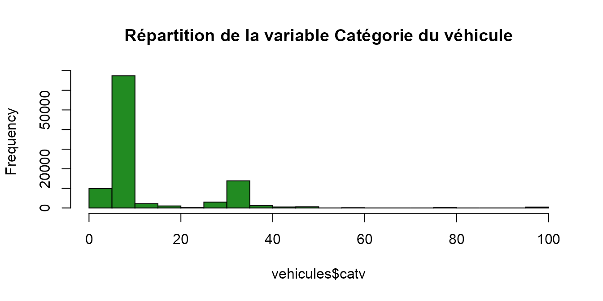
# on pourrait commencer les données à partir de 2006 car cela supprimerait déjà 9 modalités
# variable obs = Obstacle fixe heurté
vehicules %>%
group_by(obs) %>%
summarise(n = n(),
prop = n / nrow(vehicules)) %>%
arrange(desc(prop))
#> `summarise()` ungrouping output (override with `.groups` argument)
#> # A tibble: 19 x 3
#> obs n prop
#> <int> <int> <dbl>
#> 1 0 86334 0.857
#> 2 1 2314 0.0230
#> 3 13 1744 0.0173
#> 4 2 1483 0.0147
#> 5 3 1419 0.0141
#> 6 4 1376 0.0137
#> 7 6 1119 0.0111
#> 8 8 1094 0.0109
#> 9 14 798 0.00792
#> 10 12 735 0.00730
#> 11 15 537 0.00533
#> 12 16 399 0.00396
#> 13 9 395 0.00392
#> 14 7 304 0.00302
#> 15 11 213 0.00211
#> 16 5 163 0.00162
#> 17 17 134 0.00133
#> 18 10 108 0.00107
#> 19 NA 41 0.000407
hist(vehicules$obs, main = "Répartition de la variable Obstacle fixe heurté", col = "forestgreen")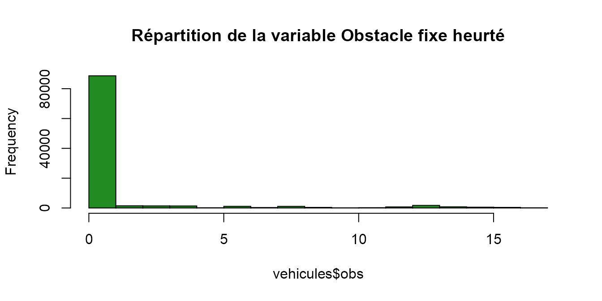
# on pourrait créer une variable binaire : oui/non
# variable obsm = Obstacle mobile heurté
vehicules %>%
group_by(obsm) %>%
summarise(n = n(),
prop = n / nrow(vehicules)) %>%
arrange(desc(prop))
#> `summarise()` ungrouping output (override with `.groups` argument)
#> # A tibble: 8 x 3
#> obsm n prop
#> <int> <int> <dbl>
#> 1 2 70290 0.698
#> 2 0 18220 0.181
#> 3 1 10380 0.103
#> 4 9 902 0.00896
#> 5 6 712 0.00707
#> 6 NA 74 0.000735
#> 7 4 71 0.000705
#> 8 5 61 0.000606
hist(vehicules$obsm, main = "Répartition de la variable Obstacle mobile heurté", col = "forestgreen")
# on pourrait regrouper les modalités en : aucun/piéton/véhicules/animal/autre
# variable choc = Point de choc initial
vehicules %>%
group_by(choc) %>%
summarise(n = n(),
prop = n / nrow(vehicules)) %>%
arrange(desc(prop))
#> `summarise()` ungrouping output (override with `.groups` argument)
#> # A tibble: 11 x 3
#> choc n prop
#> <int> <int> <dbl>
#> 1 1 36013 0.358
#> 2 3 15028 0.149
#> 3 2 12216 0.121
#> 4 4 10298 0.102
#> 5 8 7128 0.0708
#> 6 0 6038 0.0600
#> 7 7 5945 0.0590
#> 8 6 3612 0.0359
#> 9 5 2947 0.0293
#> 10 9 1440 0.0143
#> 11 NA 45 0.000447
hist(vehicules$choc, main = "Répartition de la variable Point de choc initial", col = "forestgreen")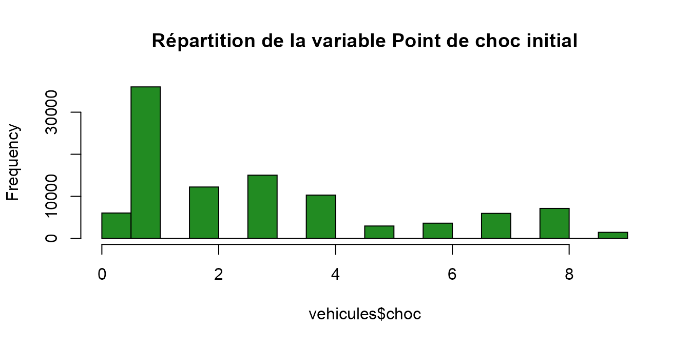
# Fait-on des regroupements du style : avant/arrière/côté et aucun ?
# variable manv = Manoeuvre principale avant l’accident
vehicules %>%
group_by(manv) %>%
summarise(n = n(),
prop = n / nrow(vehicules)) %>%
arrange(desc(prop))
#> `summarise()` ungrouping output (override with `.groups` argument)
#> # A tibble: 28 x 3
#> manv n prop
#> <int> <int> <dbl>
#> 1 1 40258 0.400
#> 2 2 11792 0.117
#> 3 15 8190 0.0813
#> 4 0 5947 0.0591
#> 5 13 4518 0.0449
#> 6 26 3603 0.0358
#> 7 17 3598 0.0357
#> 8 9 3003 0.0298
#> 9 23 2763 0.0274
#> 10 16 2546 0.0253
#> # ... with 18 more rows
hist(vehicules$manv, main = "Répartition de la variable Manoeuvre principale avant l’accident", col = "forestgreen")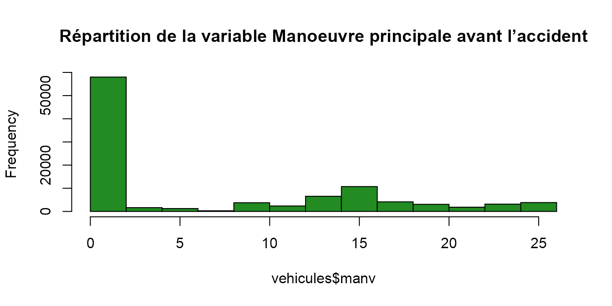
# Vu les résultats de la répartition, pas convaincue de l'intérêt de la variable
# variable occutc = Nombre d’occupants dans le transport en commun
summary(vehicules$occutc)
#> Min. 1st Qu. Median Mean 3rd Qu. Max. NA's
#> 0.00 1.00 1.00 1.82 1.00 33.00 99818
# 99 818 valeurs manquantes => donnée inexploitableInsertion des libellés dans la table VEHICULES
# Ajout des libellés relatifs à la catégorie de véhicules
vehicules <- vehicules %>%
select(-c(senc,manv,occutc)) %>% # On retire les variables inexploitables
mutate(catv=case_when(
catv==1 ~ "Bicyclette",
catv %in% c(2,30:34) ~ "2 roues motorisé",
catv==7 ~ "VL seul",
catv==10 ~ "VU seul",
catv %in% c(13:15) ~ "Poids lourd",
catv %in% c(16:17,20:21) ~ "Engin agricole",
catv %in% c(37,38) ~ "Bus",
catv==39 ~ "Train",
catv==40 ~ "Tramway",
catv %in% c(35,36) ~ "Quad",
TRUE ~ "Autre")
) %>%
# Ajout d'une variable binaire "Oui/Non" si un obstacle fixe a été heurté
mutate(obs=case_when(
obs==0 ~ "Non",
obs %in% c(1:17) ~ "Oui",
TRUE ~ "Non Renseigné")
) %>%
# Ajout des libellés relatifs à l'obstale mobile heurté avec regroupement en Aucun/Piéton/Véhicule/Animal/Autre
mutate(obsm=case_when(
obsm==0 ~ "Aucun",
obsm==1 ~ "Piéton",
obsm %in% c(2,4) ~ "Véhicule",
obsm %in% c(5,6) ~ "Animal",
TRUE ~ "Autre")
) %>%
# Ajout des libellés relatifs au point de choc initial avec regroupement Avant/Arrière/Côté/Aucun
mutate(choc=case_when(
choc==0 ~ "Aucun",
choc %in% c(1:3) ~ "Avant",
choc %in% c(4:6) ~ "Arrière",
choc %in% c(7,8) ~ "Côté",
choc==9 ~ "Chocs multiples (tonneaux)",
TRUE ~ "Non Renseigné")
)
vehiculesExploration des données de la table usagers
# usagers <- read.table(here::here("data-raw","usagers-2019.csv"),sep=";",header = T)
# usagers <- data("usagers",package = "ACC")
usagers <- dl_usagers(2019L)
#> i Chargement de usagers-2019.csv
#> Warning: The following named parsers don't match the column names: secu
# data(usagers)
summary(usagers)
#> Num_Acc id_vehicule num_veh place
#> Length:132977 Length:132977 Length:132977 Min. : 1.000
#> Class :character Class :character Class :character 1st Qu.: 1.000
#> Mode :character Mode :character Mode :character Median : 1.000
#> Mean : 2.185
#> 3rd Qu.: 2.000
#> Max. :10.000
#>
#> catu grav sexe an_nais trajet
#> Min. :1.000 Min. :1.000 Min. :1.00 Min. :1900 Min. :0.000
#> 1st Qu.:1.000 1st Qu.:1.000 1st Qu.:1.00 1st Qu.:1967 1st Qu.:0.000
#> Median :1.000 Median :3.000 Median :1.00 Median :1983 Median :4.000
#> Mean :1.353 Mean :2.543 Mean :1.32 Mean :1980 Mean :3.242
#> 3rd Qu.:2.000 3rd Qu.:4.000 3rd Qu.:2.00 3rd Qu.:1995 3rd Qu.:5.000
#> Max. :3.000 Max. :4.000 Max. :2.00 Max. :2019 Max. :9.000
#> NA's :543
#> secu1 secu2 secu3 locp
#> Length:132977 Min. :0.00 Min. :0.00 Min. :0.00
#> Class :character 1st Qu.:0.00 1st Qu.:0.00 1st Qu.:0.00
#> Mode :character Median :0.00 Median :9.00 Median :0.00
#> Mean :2.52 Mean :5.57 Mean :0.44
#> 3rd Qu.:6.00 3rd Qu.:9.00 3rd Qu.:0.00
#> Max. :9.00 Max. :9.00 Max. :9.00
#> NA's :40164 NA's :131223 NA's :50473
#> actp etatp
#> Length:132977 Min. :1.00
#> Class :character 1st Qu.:1.00
#> Mode :character Median :1.00
#> Mean :1.28
#> 3rd Qu.:1.00
#> Max. :3.00
#> NA's :121920
names(usagers)
#> [1] "Num_Acc" "id_vehicule" "num_veh" "place" "catu"
#> [6] "grav" "sexe" "an_nais" "trajet" "secu1"
#> [11] "secu2" "secu3" "locp" "actp" "etatp"
nrow(usagers) #132977
#> [1] 132977
usagers %>% head(10)
#> # A tibble: 10 x 15
#> Num_Acc id_vehicule num_veh place catu grav sexe an_nais trajet secu1
#> <chr> <chr> <chr> <int> <int> <int> <int> <int> <int> <chr>
#> 1 201900~ 138Â 306Â ~ B01 2 2 4 2 2002 0 1
#> 2 201900~ 138Â 306Â ~ B01 1 1 4 2 1993 5 1
#> 3 201900~ 138Â 306Â ~ A01 1 1 1 1 1959 0 1
#> 4 201900~ 138Â 306Â ~ A01 1 1 4 2 1994 0 1
#> 5 201900~ 138Â 306Â ~ A01 1 1 1 1 1996 0 1
#> 6 201900~ 138Â 306Â ~ A01 2 2 4 2 1930 9 1
#> 7 201900~ 138Â 306Â ~ B01 1 1 4 1 1995 9 1
#> 8 201900~ 138Â 306Â ~ C01 1 1 1 1 1966 1 1
#> 9 201900~ 138Â 306Â ~ A01 1 1 1 1 1993 0 1
#> 10 201900~ 138Â 306Â ~ B01 1 1 1 1 1968 5 1
#> # ... with 5 more variables: secu2 <int>, secu3 <int>, locp <int>, actp <chr>,
#> # etatp <int>
# variable place = Place occupée dans le véhicule
usagers %>%
group_by(place) %>%
summarise(n = n(),
prop = n / nrow(usagers)) %>%
arrange(desc(prop))
#> `summarise()` ungrouping output (override with `.groups` argument)
#> # A tibble: 10 x 3
#> place n prop
#> <int> <int> <dbl>
#> 1 1 96935 0.729
#> 2 2 15495 0.117
#> 3 10 11265 0.0847
#> 4 3 2530 0.0190
#> 5 4 2301 0.0173
#> 6 9 1539 0.0116
#> 7 7 1355 0.0102
#> 8 5 763 0.00574
#> 9 8 619 0.00465
#> 10 6 175 0.00132
hist(usagers$place, main = "Répartition de la variable Place occupée dans le véhicule", col = "orange")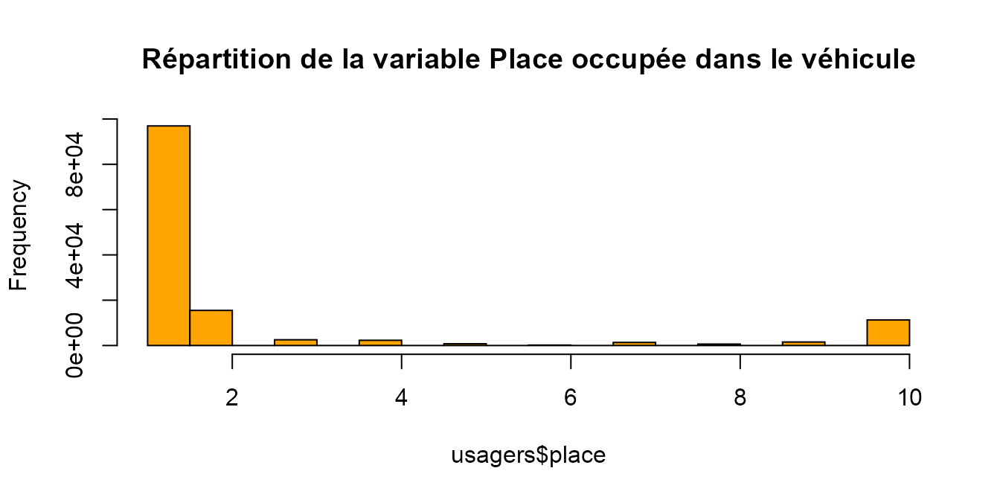
# pas convaincue de son apport par rapport à la variable catu
# variable catu = Catégorie d'usager
usagers %>%
group_by(catu) %>%
summarise(n = n(),
prop = n / nrow(usagers)) %>%
arrange(desc(prop))
#> `summarise()` ungrouping output (override with `.groups` argument)
#> # A tibble: 3 x 3
#> catu n prop
#> <int> <int> <dbl>
#> 1 1 97356 0.732
#> 2 2 24356 0.183
#> 3 3 11265 0.0847
hist(usagers$catu, main = "Répartition de la variable Catégorie d'usager", col = "orange")
# on garde telle quelle
# variable grav = Gravité de blessure de l'usager
usagers %>%
group_by(grav) %>%
summarise(n = n(),
prop = n / nrow(usagers)) %>%
arrange(desc(prop))
#> `summarise()` ungrouping output (override with `.groups` argument)
#> # A tibble: 4 x 3
#> grav n prop
#> <int> <int> <dbl>
#> 1 1 55314 0.416
#> 2 4 53307 0.401
#> 3 3 20858 0.157
#> 4 2 3498 0.0263
hist(usagers$grav, main = "Répartition de la variable Gravité de blessure de l'usager", col = "orange")
# on garde telle quelle
# variable - an_nais = Année de naissance
summary(usagers$an_nais)
#> Min. 1st Qu. Median Mean 3rd Qu. Max.
#> 1900 1967 1983 1980 1995 2019
hist(usagers$an_nais, main = "Répartition des accidentés selon leur année de naissance", col = "orange")
# à voir si on fait des classes
# variable trajet = Motif du déplacement au moment de l’accident
usagers %>%
group_by(trajet) %>%
summarise(n = n(),
prop = n / nrow(usagers)) %>%
arrange(desc(prop))
#> `summarise()` ungrouping output (override with `.groups` argument)
#> # A tibble: 8 x 3
#> trajet n prop
#> <int> <int> <dbl>
#> 1 5 52021 0.391
#> 2 0 34376 0.259
#> 3 1 17677 0.133
#> 4 4 12506 0.0940
#> 5 9 9461 0.0711
#> 6 3 3557 0.0267
#> 7 2 2836 0.0213
#> 8 NA 543 0.00408
hist(usagers$trajet, main = "Répartition de la variable Motif du déplacement au moment de l’accident", col = "orange")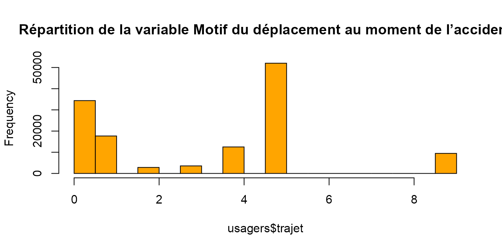
# les modalités non renseigné ou autre représentent 33 % => pas convaincue de son intérêt
# variable locp = Localisation du piéton
usagers %>%
group_by(locp) %>%
summarise(n = n(),
prop = n / nrow(usagers)) %>%
arrange(desc(prop))
#> `summarise()` ungrouping output (override with `.groups` argument)
#> # A tibble: 11 x 3
#> locp n prop
#> <int> <int> <dbl>
#> 1 0 71472 0.537
#> 2 NA 50473 0.380
#> 3 3 3423 0.0257
#> 4 2 2491 0.0187
#> 5 4 1641 0.0123
#> 6 1 1604 0.0121
#> 7 5 793 0.00596
#> 8 9 575 0.00432
#> 9 6 320 0.00241
#> 10 8 169 0.00127
#> 11 7 16 0.000120
hist(usagers$locp, main = "Répartition de la variable Localisation du piéton", col = "orange")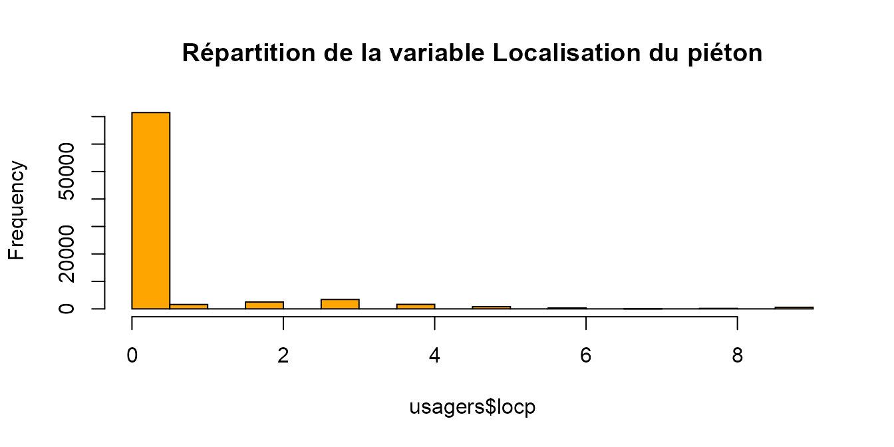
# les modalités non renseigné ou sans objet représentent 92 % => pas convaincue de son intérêt sauf si on fait un zoom sur les accidents avec piétons
# variable actp = Action du piéton
usagers %>%
group_by(actp) %>%
summarise(n = n(),
prop = n / nrow(usagers)) %>%
arrange(desc(prop))
#> `summarise()` ungrouping output (override with `.groups` argument)
#> # A tibble: 13 x 3
#> actp n prop
#> <chr> <int> <dbl>
#> 1 0 95554 0.719
#> 2 <NA> 26341 0.198
#> 3 3 8162 0.0614
#> 4 1 701 0.00527
#> 5 9 688 0.00517
#> 6 5 453 0.00341
#> 7 B 431 0.00324
#> 8 2 313 0.00235
#> 9 4 167 0.00126
#> 10 A 107 0.000805
#> 11 6 29 0.000218
#> 12 7 18 0.000135
#> 13 8 13 0.0000978
hist(as.numeric(usagers$actp), main = "Répartition de la variable Action du piéton", col = "orange")
#> Warning in hist(as.numeric(usagers$actp), main = "Répartition de la variable
#> Action du piéton", : NAs introduits lors de la conversion automatique
# idem variable locp
# variable etatp = Accompagnants du piéton
usagers %>%
group_by(etatp) %>%
summarise(n = n(),
prop = n / nrow(usagers)) %>%
arrange(desc(prop))
#> `summarise()` ungrouping output (override with `.groups` argument)
#> # A tibble: 4 x 3
#> etatp n prop
#> <int> <int> <dbl>
#> 1 NA 121920 0.917
#> 2 1 8392 0.0631
#> 3 2 2219 0.0167
#> 4 3 446 0.00335
hist(usagers$etatp, main = "Répartition de la variable Accompagnants du piéton", col = "orange")
# idem variable locpInsertion des libellés dans la table USAGERS
# Ajout des libellés relatifs à la catégorie d'usager
usagers <- usagers %>%
select(-c(place,trajet,locp,actp,etatp)) %>% # On retire les variables inexploitables
mutate(catu=case_when(
catu==1 ~ "Conducteur",
catu==2 ~ "Passager",
catu==3 ~ "Piéton")
) %>%
# Ajout des libellés relatifs à la gravité de blessure de l'usager
mutate(grav=case_when(
grav==1 ~ "Indemne",
grav==2 ~ "Tué",
grav==3 ~ "Blessé hospitalisé",
grav==4 ~ "Blessé léger")
) %>%
# Ajout des libellés relatifs au sexe de l'usager
mutate(sexe=case_when(
sexe==1 ~ "Masculin",
sexe==2 ~ "Féminin")
)
usagers